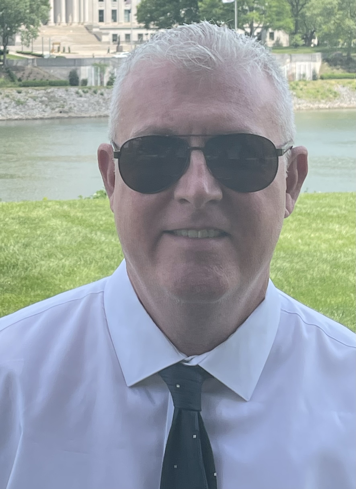

Dedicated and results-driven Director of IT with experience in leading technology
initatives and optimizing organizational efficiency. Proven track record of successfully
aligning IT strategies with business objectives, implementing cutting-edge solutions,
and managing cross-functional teams. Adept at driving innovation and enhancing culture.
Strong communicator and leader, adept at building relationships and fostering collaboration
across departments.
- Education
-
University of California at Santa Barbara
Bachelor of Arts, Law and Society
- Expertise
-
Information Technology | Enterprise Architecture | Innovation | Legacy Software Modernization
| Quality Assurance | Software Development Life Cycle (SDLC) | Agile Methodoligies
| Platform Development | Cross Functional Team Leadership
- Experience
-
BMO Tempe AZ - March 2021 - December 2023
Director, Technology Platform
Led two teams including the centralized api team and the content management team. Changed the culture
of both teams by implementing agile, OKR's, enhanced processes, and delivering the highest value outcomes
for the organization. Decreased turnover and increased hiring of staff on both teams.
-
Adopted agile and improved development processes to dramatically improve team culture as demonstrated by
greatly reduced attrition and turnover by 85%
-
Created and managed over 250 api's that powered the highest value applications in the bank.
For example the Payment Protection Plan (PPP) generated nearly $500 million to the bank in it's first year.
- Implemented a protocol and cadence to create and enchance new functionality to the api platform.
-
Led innovation teams with the ASU Luminosity innovation labs that developed students and faculty on cutting-edge
solutions that drive real business value. We created a document deconstruction platform that stored the data in
DynamoDB and enhanced the meta data with genrative AI.
-
Launched an api governance and review program that ensured development, communication, security, and audit
requirements were always met.
- Mentored and coached leaders and individual contributors to deliver the best outcomes.
- Worked across multiple business units to ensure success and meet or exceed set goals.
-
Best Western Phoenix AZ - July 2020 - March 2021
Cloud First Strategist (Self Employed)
Built an implementation team to deliver on strategy to create a cloud first reservation creation and delivery platform
for Best Western. Managed developers on and offshore to create the first implementation of the platform targeting
the Oracle property management system.
-
Adopted agile and improved development processes to dramatically improve culture as demonstrated by greatly
reduced attrition and turnover by 85%
-
Created and managed over 250 api's that powered the highest value applications in the bank.
For example the Payment Protection Plan (PPP) generated nearly $500 million to the bank in it's first year.
- Implemented a protocol and cadence to create and enchance new functionality to the api platform.
-
Led innovation teams with the ASU Luminosity innovation labs that developed students and faculty on cutting-edge
solutions that drive real business value. We created a document deconstruction platform that stored the data in DynamoDB
and enhanced the meta data with genrative AI.
-
Launched an api governance and review program tat ensured development, communication, security, and audit requirements
were always met.
- Mentored and coached leaders and individual contributors to deliver the best outcomes.
- Worked across multiple business units to ensure success and meet or exceed set goals.
-
Best Western Phoenix AZ - August 2017 - March 2020
Director, Technology Management
Rearchitected the entire reservation deliver system to a cloud first reservation platform. This platform is
designed to extend the reach and capabilities for almost any property management system. In addition to driving
highest value systems to the cloud, I developed and mentored leaders in devops, quality engineering and
architecture.
-
Developed a strategy and architecture to reimagine the entire reservation delivery system as a cloud first
platform.
-
Reduced turnover, increased hiring, implemented strong agile practices, and created a culture of high
performance while delivering the highest value outcomes for the organization.
- Transformed the QA team of manual tester to a QE team of automated testers.
-
Worked with application owners to architect and troubleshoot applications in AWS for disaster recovery.
-
Best Western Phoenix AZ - August 2015 - March 2017
Senior IT Manager
Deconstructed and modernized the website by breaking up the monolith into web service api's and introduced
a content management system. This new platform allows development and business to rapidly iterate and provide booking
capabilities while using A/B testing to increase revenue.
-
Increased revenue by $250 million by reducing downtime, delivering feature, and working with e-Commerce for a
consumer driven experience. By performing A/B testing we were able to identify the most effective calls to action
and color palettes.
-
Transformed the wwww.bestwestern.com website from a monolith into a modern platform using a content management system
and micro services.
-
Created and leveraged a suite of api web services inside Adobe AEM producing and consuming json.
-
Best Western Phoenix AZ - August 2011 - August 2015
IT Architect
Built the core patterns and structures for the 140+ microservices and restful web services that power the website,
mobile apps, call center. Modernized the legacy systems to a modern architecture to capitalize on horizontal
growth. Updated and removed Oracle forms and stored procedures where reasonable.
-
Developed a strategy for restfule web services and micro services as our core business engine.
-
Created the core patterns, code coverage, pipelines, standards and build tools leveraging DevOps where possible
for Best Western.
-
Worked closely with all the development teams to refactor jsp/stored procedures and adopt to new architectural
patterns. This allowed the business to deliver value faster.
-
Created new revenue streams for Best Western Rewards and other business verticals.
-
NOVAHEAD, INC. Phoenix AZ - January 2001 - January 2009
Chief Technology Officer
Created this company as one of 3 founders. The company focused on developing a next generation software application
that was often used as middleware for large organizations in the military and defense contractors.
-
Grew the company to execute on projects.
-
Worked with investors for operating capital.
-
Created applications for Raytheon utilizing our Exponential middleware application.
-
Extended our reach to Florida National Gaurd and Snow goose operations.
- References
- Available on request
- LinkedIn
- Profile: Shane McKee